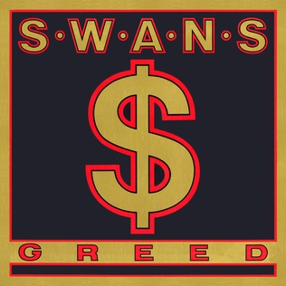
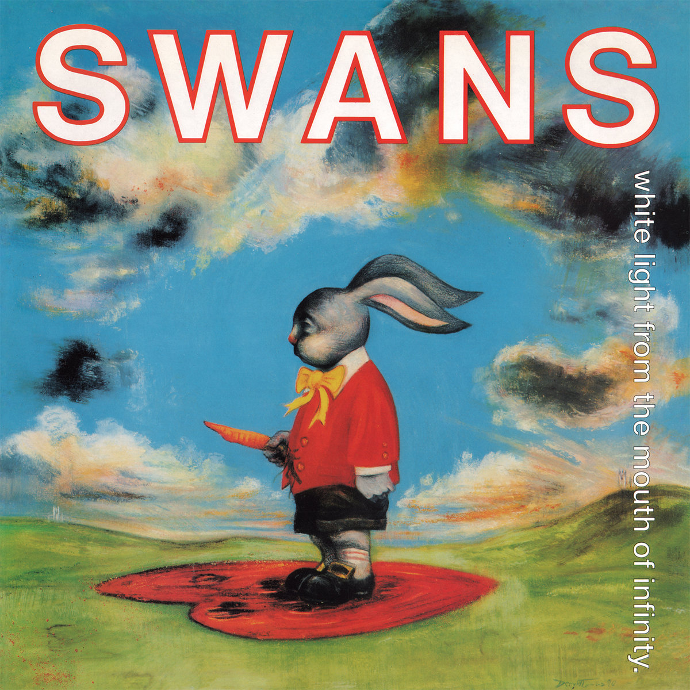

While many fans of the band Swans would not set this album above the bands 2014 record "To Be Kind", it sits as my number one due to my love for the bleak and hopeless emotions the album presents in context with the 1980s NYC scene the album was created in.
To be Kind, the album a lot of people will put as their #1. This album is a monster of a Rock composition with every musical corner of Swans packed into one with a runtime of just 2 hours. Even with how highly acclaimed this album is within the bands discography, it is still not for the casual music listener as this project has a lot to unpack.

This is one of the groups earlier projects that would follow their 1987 sophmore album "Children of God". This was at the time where the group was still following heavy and rhythmic roots and more traditional song writing that brought them to where they are today.